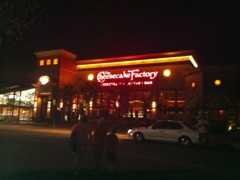

August 21, 2011
Woke up this morning and Jeff made us breakfast with fresh eggs from the chicken coup. I asked how many eggs they get per day from the 10 chickens they have and was completely surprised when he said they get about 8 eggs per day. Unsurprisingly, Jeff said they were about sick of eggs and give as many eggs away as they can.
We got on the road around 10:30AM and drove straight through Wilkes-Barre before stopping at the first rest area. There were some vending machines and we decided to get some snacks. Of course the second one we get gets stuck in the machine. We spent a bunch of time trying to get it out to no avail. Enjoy your free snack who ever gets it.
We continued on I-81 down to Harrisburg, PA and the kids started bickering, Hope turns around and asks, "Do I have to post on Facebook how bad you guys are being?" For whatever reason that seemed to work. Don't ask me why it worked but it did. I laughed at that for a while.
 We stopped in Harrisburg at a Friendly's for lunch. Jordan was in heaven with Mac and Cheese Quesadillas.
We stopped in Harrisburg at a Friendly's for lunch. Jordan was in heaven with Mac and Cheese Quesadillas.
Hope wanted to drive a little while after lunch and no more then two minutes in we got caught in a bad storm. Luckily it only lasted 10 miles or so. She drove to Baltimore where traffic really picked up. We saw a pretty bad accident south of Baltimore.
We finally arrived at the hotel and got checked in and brought up our bags. A hotel staff member brought us a rollaway cot for Jordan as we only got two doubles. After getting settled in we headed on down to the pool and hot tub. I thought it was funny cause they had a lifeguard on duty, I am not sure if it's Virginia law but I've never been in a Hilton Garden Inn and it's pool area have a Lifeguard. I kept thinking of the SNL skit where Jim Carey is the Hot tub Lifeguard and blows his whistle to start lap swim.
We found that there was a Cheesecake Factory close by and went over for Dinner. Half of us wasn't hungry. We wound up packing most of it up and bringing it back...dinner tomorrow too.
We're all in bed and ready for tomorrow. Should be a long day we have a full day planned around Washington DC. National Zoo, Holocaust Museum and Smithsonian American History Museum are all scheduled before they close then we plan to walk around the reflecting pool and look at the memorials.
- Check out day 2 photos - there are two pages of photos so on the photo home page use the top arrows to see both pages.